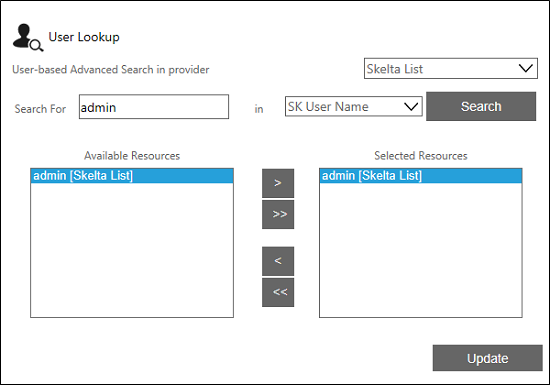

No
Configuring Recipient Resource
The Recipient Resource property allows you to configure the users who have to receive the notification. A maximum of 16 resources can be configured as recipients to receive notification. If more than 16 resources are configured, then the 16 active resources will receive the notifications.
Different Methods of Assigning an Recipient Resource
Assigning an Recipient by building an expression:
Filter Condition is the default option that is selected when the Recipient Resource is accessed. This option allows you to build an expression to identify the Recipient. The section below explains how you can choose different parameters required to build and expression.
- The Providers list - You can select the required provider from the Providers list.
- The Attribute list - You can select the attribute to be used to identify the Recipient. For example, "AdministratorId", in this list.
- The Operator list - You can select the operator for the expression here. E.g., "="
- The Value type list - You can select the type of value to assign to the attribute in the expression. You can specify Variable, Content, Value, or XMLVariables here.
- The Value text box/list - You can specify the actual value to assign to the attribute. The control displayed depends on the option selected in the preceding list.
- If you had selected "Value", it will display a text box here. You can enter a discrete value in this box to complete the expression.
- If you had selected "Variable", "Content", or "XMLVariables", there will be a list instead of the field. This list will have the variable collection or content collection or XMLVariables collection from which you can select an appropriate option.
- The Logical operator list - You can select logical operators from this list to build compound expressions. The options available are "End", "And", "Or", "')' And", and "')' Or". You can select "End" to complete the expression.
- Add - You can click this button to add the new expression to the text area.
- Undo - You can click this button to remove a condition you have added to the expression.
At the bottom of the window you will find the following buttons:
- Clear - You can click this button to clear the expression shown in the text area. This is useful when you want to build a new expression.
- Update - You can click this button to save the expression that has been added to the text area.
Assigning an Recipient Resource through User Lookup
Through the User Lookup you can search and select user(s). This automatically builds the expression and the same is updated in the text area. Follow the steps given below to assign an Recipient Resource through User Lookup
- Select the User Lookup option. The User Lookup dialog is displayed.
- Search and select the required user.

- Click Update in the User Lookup dialog. In Recipient Resource, you will see that an expression is displayed.
- Click Update in Recipient Resource to update the selected user in the Recipient Resource property.
Assigning an Recipient Resource through Role Lookup
Through the Role Lookup you can search and select a specific role. This automatically builds the expression and the same is updated in the text area.
- Select the Role Lookup option. The Role Lookup dialog is displayed.
- Search and select for the required role.

- Click Update in the Role Lookup dialog and verify the Recipient Resource. In Recipient Resource, you will see that an expression is displayed.
- Click Update in Recipient Resource to update the Recipient Resource property.
Assigning an Recipient Resource through Workflow Initiator
Selecting the Workflow Initiator allows you to assign the task to the Workflow Initiator, that is the user who closes the workflow. An expression is built automatically and updated in the text area of Recipient Resource.